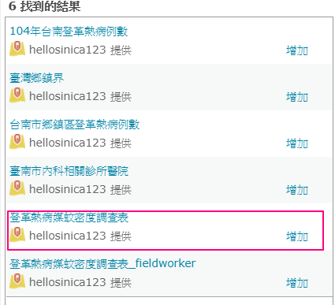
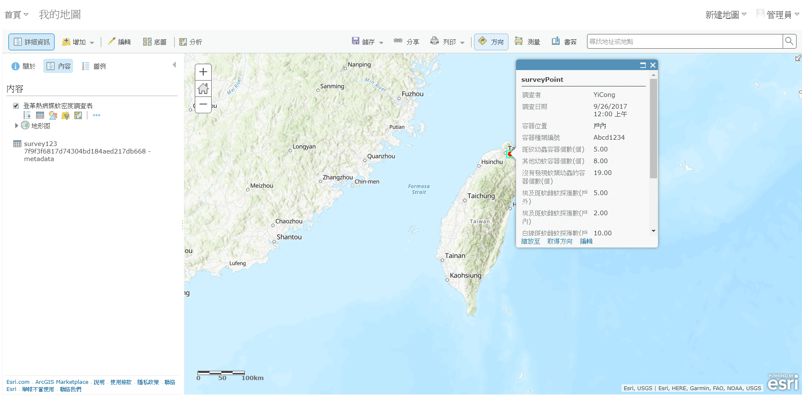

摘要
主題單元
01.登革熱疫情擴散地圖
將表格資料轉成雲端圖層服務
啟用時間序列功能
在雲端圖台中加入圖層
變更時間軸播放方式
使用熱區圖顯示病例擴散情況
儲存地圖
02.登革熱病例統計地圖
將Shapefile變成雲端圖層服務
在圖台中加入全台鄉鎮界圖層
篩選台南市範圍的圖層
加入登革熱病例數圖層
使用空間統計計算每個鄉鎮包含多少病例數
變更統計結果圖層樣式
顯示鄉鎮名稱標籤
設定彈出視窗內容
儲存地圖
03.登革熱疫情擴散App
套用Time Aware樣板
設定網頁樣式
04.登革熱噴藥事件簿
05.登革熱分區噴藥事件簿
06.登革熱快篩診所查詢系統
07.居家登革熱病媒蚊調查
建立問卷調查表
開始調查數據
瀏覽即時調查結果
Published with GitBook
瀏覽即時調查結果
瀏覽即時調查結果
打開ArcGIS Online，使用以下資訊登入
網址：
https://www.arcgis.com
帳號：您的帳號
密碼：您的密碼
點選【繪圖】，開啟線上圖台
搜尋登革熱病媒蚊密度調查表

加入圖層後即可看到即時調查數據囉!

results matching "
"
No results matching "
"